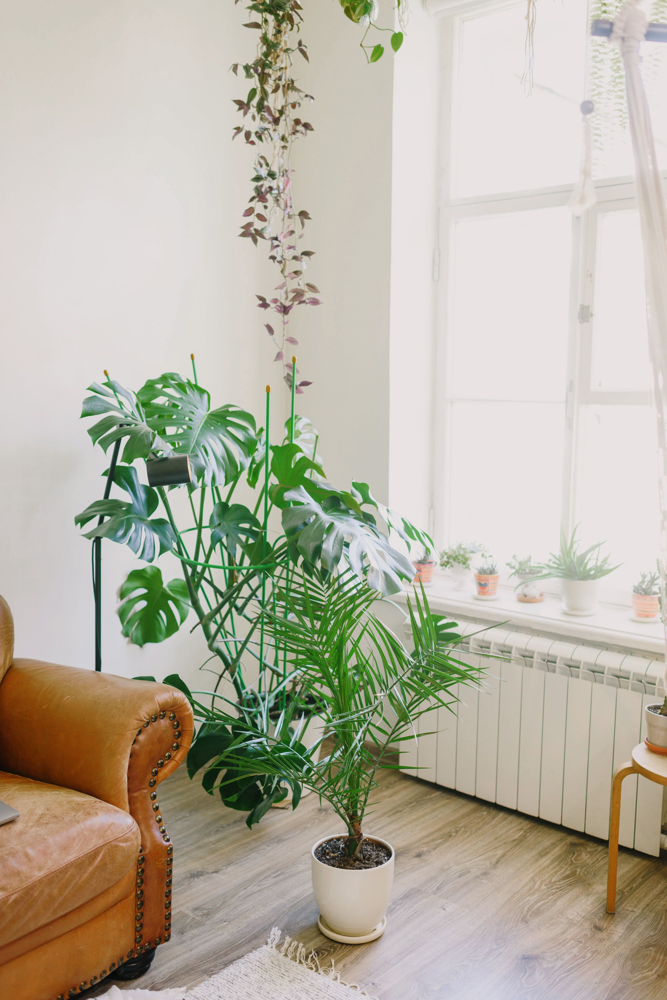
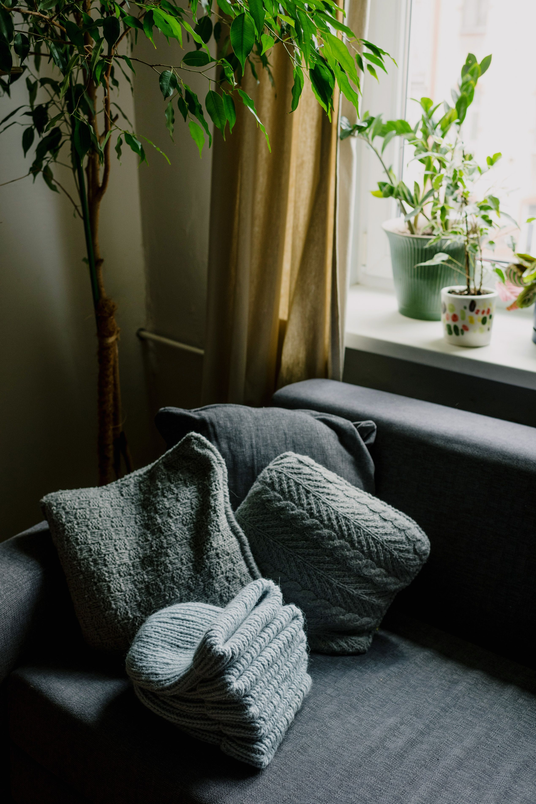
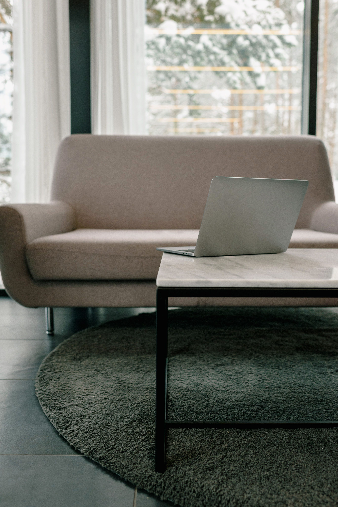

In This Article
- Introduction
- Give Every Item a Clear Place
- Use the One-Minute Rule
- Reset Rooms Before Leaving Them
- Keep Flat Surfaces Clear
- Control What Enters the Home
- Create Simple Drop Zones
- Do a Short Daily Reset
- Use Baskets and Containers With Purpose
- Keep Laundry Moving
- Maintain the Kitchen as You Go
- Use Small Cleaning Habits
- Review Clutter Weekly
- Make the System Easy for Everyone
- Frequently Asked Questions
- Use a Simple Weekly Planning Moment
- Use a Simple Weekly Planning Moment
- Use a Simple Weekly Planning Moment
- Use a Simple Weekly Planning Moment
- Use a Simple Weekly Planning Moment
- Use a Simple Weekly Planning Moment
- Use a Simple Weekly Planning Moment
- Use a Simple Weekly Planning Moment
- Use a Simple Weekly Planning Moment
- Use a Simple Weekly Planning Moment
- Use a Simple Weekly Planning Moment
- Use a Simple Weekly Planning Moment
- Use a Simple Weekly Planning Moment
- Conclusion
Introduction
Keeping a home organized every day is easier when order comes from small habits instead of long cleaning sessions. The goal is to reduce the amount of unfinished movement: objects that enter a room, get placed temporarily on a surface, and then remain there for days.
A simple system gives frequently used items a clear place and makes returning them easy. When the storage location is inconvenient, daily order becomes harder to maintain regardless of how many organizers you buy.
Give Every Item a Clear Place
Objects are easier to put away when their destination is obvious. Keys need a hook or tray, shoes need a defined area, documents need a folder, and frequently used kitchen items need accessible storage.
If an object is always left in the same wrong place, consider whether the official storage location is too far away or difficult to use.
Organize according to behavior rather than an idealized system. The best storage solution is the one people actually use consistently.
Use the One-Minute Rule
If a task takes roughly a minute, doing it immediately can prevent clutter from accumulating. Examples include hanging a coat, putting shoes away, returning a cup to the kitchen, or placing a document in its folder.
This habit works because many small unfinished tasks eventually become one large cleanup.
Do not turn the rule into pressure to interrupt important work constantly. Use it mainly during normal transitions between activities.
Reset Rooms Before Leaving Them
Before leaving a room, take a few seconds to return one or two items to where they belong. Carry objects toward the room you are already going to.
This reduces the number of separate trips needed later and keeps clutter from spreading through the home.
A quick reset is especially useful after meals, before bed, and when finishing work at a desk.
Keep Flat Surfaces Clear
Tables, countertops, dressers, and desks naturally attract objects. Decide what is allowed to remain on each surface and remove everything else.

Use a small tray for categories that genuinely need to stay visible, such as keys or daily medication, rather than allowing unrelated objects to spread across the entire surface.
Clear surfaces also make routine cleaning faster because you do not need to move dozens of objects first.
Control What Enters the Home
Organization becomes easier when fewer unnecessary items enter. Before buying, ask where the object will be stored and what function it will replace or add.
Deal with mail, packaging, receipts, and bags soon after they enter instead of leaving them in the entryway or on the dining table.
When a new object replaces an older version, remove the old one promptly if it no longer has a purpose.
Create Simple Drop Zones
Entryways benefit from a defined place for keys, bags, shoes, umbrellas, and daily essentials. A narrow shelf, hooks, basket, or small cabinet can be enough.
Keep the drop zone proportional to the household. Oversized storage can become a place for unrelated clutter.
Review it every few days and remove items that should move deeper into the home.
Do a Short Daily Reset
Set aside ten or fifteen minutes at a consistent time to return objects, clear surfaces, collect dishes, and prepare the home for the next day.

Focus on visible areas and high-traffic rooms first. Do not try to deep clean during this reset.
A short routine is more sustainable than waiting until the house feels completely out of control.
Use Baskets and Containers With Purpose
Containers are helpful when they define categories. A basket for blankets, a box for chargers, or a drawer divider for utensils reduces visual clutter.
Unlabeled baskets can become hidden piles of unrelated objects. If a container fills quickly with things that do not belong together, the category is too vague.
Choose storage after decluttering so you are not buying containers for items you no longer need.
Keep Laundry Moving
Use a hamper where clothes are actually removed. If dirty laundry regularly collects in another room, move or add a hamper there.
Choose a realistic laundry schedule based on household size. Smaller regular loads can be easier to complete than allowing a very large backlog.
Finish the cycle: washing is not complete until clothes are dried, folded or hung, and returned to storage.
Maintain the Kitchen as You Go
Put ingredients away while cooking and load or wash utensils during natural pauses. This prevents the kitchen from becoming overwhelming after the meal.

Clear the table and counters each evening. A clean starting point makes breakfast and meal preparation easier the next day.
Keep frequently used items accessible and rarely used equipment stored farther away.
Use Small Cleaning Habits
Organization and cleaning support each other. Wipe a bathroom counter after use, sweep visible crumbs when you see them, and clean spills before they dry.
These small actions do not replace regular cleaning, but they reduce the amount of work required later.
Keep basic cleaning supplies near the areas where they are used when it is safe to do so.
Review Clutter Weekly
Once a week, check common accumulation points such as the entryway, dining table, bedroom chair, bathroom counter, and desk.
Return objects to their places, recycle or discard what is no longer needed, and identify recurring clutter patterns.
If the same category always accumulates, improve the storage system instead of repeatedly cleaning the same pile.
Make the System Easy for Everyone
Household organization works better when storage is understandable and accessible to everyone who uses it.
Use clear categories and avoid overly complicated systems with many steps. Children and other family members are more likely to participate when the correct place is obvious.
Discuss shared expectations for high-traffic areas rather than assuming everyone defines order in the same way.
Frequently Asked Questions
How much time should I spend organizing every day?
Even ten to fifteen minutes can be effective when the home already has clear storage and the routine is consistent.
Why does clutter keep returning?
Recurring clutter often means the storage location is inconvenient, the category is unclear, or too many items are entering the home.
Should I buy organizers first?
No. Declutter and measure what remains before buying containers.
What is the most useful daily habit?
A short evening reset that clears surfaces and returns frequently used objects can make the next day much easier.
Use a Simple Weekly Planning Moment
Spend a few minutes once a week checking upcoming needs such as laundry, groceries, paperwork, and areas that are becoming cluttered. Planning prevents small tasks from colliding at the same time.
A short written list can help you choose the two or three household tasks that will have the greatest impact instead of trying to reorganize everything at once.
Use a Simple Weekly Planning Moment
Spend a few minutes once a week checking upcoming needs such as laundry, groceries, paperwork, and areas that are becoming cluttered. Planning prevents small tasks from colliding at the same time.
A short written list can help you choose the two or three household tasks that will have the greatest impact instead of trying to reorganize everything at once.
Use a Simple Weekly Planning Moment
Spend a few minutes once a week checking upcoming needs such as laundry, groceries, paperwork, and areas that are becoming cluttered. Planning prevents small tasks from colliding at the same time.
A short written list can help you choose the two or three household tasks that will have the greatest impact instead of trying to reorganize everything at once.
Use a Simple Weekly Planning Moment
Spend a few minutes once a week checking upcoming needs such as laundry, groceries, paperwork, and areas that are becoming cluttered. Planning prevents small tasks from colliding at the same time.
A short written list can help you choose the two or three household tasks that will have the greatest impact instead of trying to reorganize everything at once.
Use a Simple Weekly Planning Moment
Spend a few minutes once a week checking upcoming needs such as laundry, groceries, paperwork, and areas that are becoming cluttered. Planning prevents small tasks from colliding at the same time.
A short written list can help you choose the two or three household tasks that will have the greatest impact instead of trying to reorganize everything at once.
Use a Simple Weekly Planning Moment
Spend a few minutes once a week checking upcoming needs such as laundry, groceries, paperwork, and areas that are becoming cluttered. Planning prevents small tasks from colliding at the same time.
A short written list can help you choose the two or three household tasks that will have the greatest impact instead of trying to reorganize everything at once.
Use a Simple Weekly Planning Moment
Spend a few minutes once a week checking upcoming needs such as laundry, groceries, paperwork, and areas that are becoming cluttered. Planning prevents small tasks from colliding at the same time.
A short written list can help you choose the two or three household tasks that will have the greatest impact instead of trying to reorganize everything at once.
Use a Simple Weekly Planning Moment
Spend a few minutes once a week checking upcoming needs such as laundry, groceries, paperwork, and areas that are becoming cluttered. Planning prevents small tasks from colliding at the same time.
A short written list can help you choose the two or three household tasks that will have the greatest impact instead of trying to reorganize everything at once.
Use a Simple Weekly Planning Moment
Spend a few minutes once a week checking upcoming needs such as laundry, groceries, paperwork, and areas that are becoming cluttered. Planning prevents small tasks from colliding at the same time.
A short written list can help you choose the two or three household tasks that will have the greatest impact instead of trying to reorganize everything at once.
Use a Simple Weekly Planning Moment
Spend a few minutes once a week checking upcoming needs such as laundry, groceries, paperwork, and areas that are becoming cluttered. Planning prevents small tasks from colliding at the same time.
A short written list can help you choose the two or three household tasks that will have the greatest impact instead of trying to reorganize everything at once.
Use a Simple Weekly Planning Moment
Spend a few minutes once a week checking upcoming needs such as laundry, groceries, paperwork, and areas that are becoming cluttered. Planning prevents small tasks from colliding at the same time.
A short written list can help you choose the two or three household tasks that will have the greatest impact instead of trying to reorganize everything at once.
Use a Simple Weekly Planning Moment
Spend a few minutes once a week checking upcoming needs such as laundry, groceries, paperwork, and areas that are becoming cluttered. Planning prevents small tasks from colliding at the same time.
A short written list can help you choose the two or three household tasks that will have the greatest impact instead of trying to reorganize everything at once.
Use a Simple Weekly Planning Moment
Spend a few minutes once a week checking upcoming needs such as laundry, groceries, paperwork, and areas that are becoming cluttered. Planning prevents small tasks from colliding at the same time.
A short written list can help you choose the two or three household tasks that will have the greatest impact instead of trying to reorganize everything at once.
Conclusion
Keeping a home organized every day depends more on simple habits than on perfect storage. Give items clear places, control what enters, complete small tasks during natural transitions, and use a short daily reset to prevent accumulation.
The best system is easy enough to follow on busy days. When order requires only a few simple actions, maintaining it becomes part of daily life instead of a separate project.